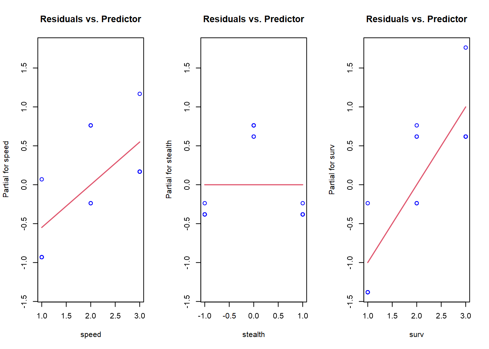
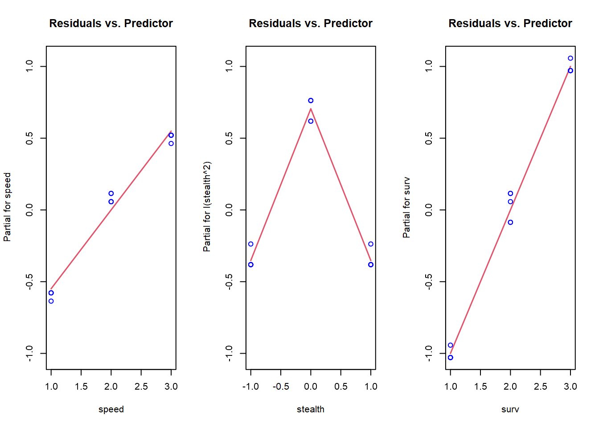
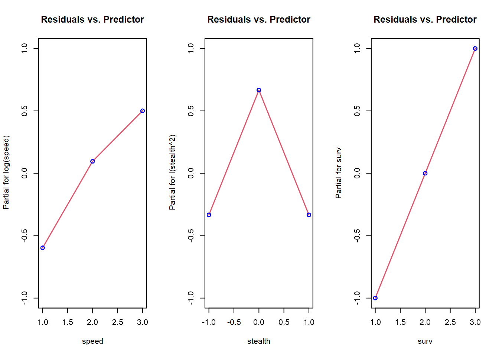
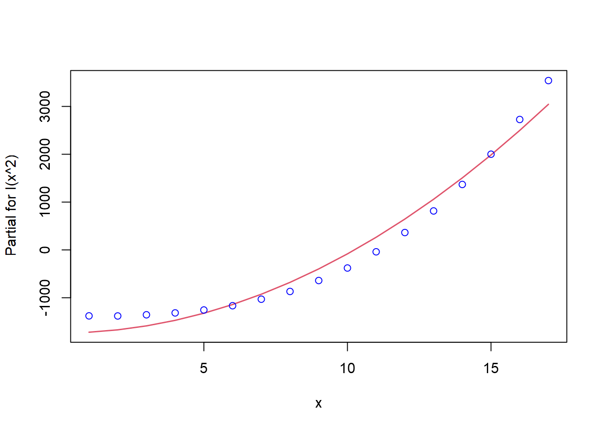
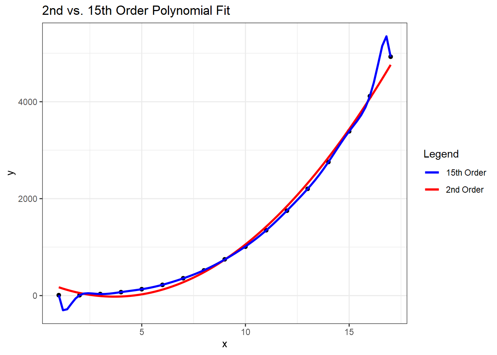

If we have data that includes factors with more than two levels, we have the ability to evaluate non-linear relationships between predictor and response variables. Incorporating non-linear terms in a linear model is accomplished by transforming either the response or predictors. For an overview of transformation, read Transformations: an introduction by Nicholas J. Cox at Durham University. Skip the section titled “How to do transformations in Stata”; we’ll replace that with “How to do transformations in R” below.
Identifying Non-Linear Relationships
I think the simplest way to screen your data for potential non-linear relationships is with a pairs plot that includes a smoother. To demonstrate, I’ll create data using a central composite design and add a response, y, that has a non-linear relationship with the speed and stealth factors. I also subtracted 2 from the stealth factor to center it at 0.
A visual inspection of the last row of plots is enough to identify the non-linear relationships that speed and stealth have with the response. We can also look at the density plot for the response (the lower right curve) and see some skewness away from a normal distribution.
Checking Model Structure
Generating a pairs plot is a screening process only. For a more complete analysis, we need to check the model structure. Recall that one of the key assumptions of the linear regression model is that the regression errors are independent and identically distributed. If that assumption is not true, then the non-linear portion of the relationship between predictor and response will be contained in the (estimated) residuals, \(\hat{\varepsilon}\). Plotting the residuals versus the individual predictors is one method of checking model structure. In R, we can do this with termplot.
# first, we need a linear modelccd.lm =lm(y ~ ., data=ccd)par(mfrow=c(1,3))termplot(ccd.lm, partial.resid =TRUE, col.res='blue', main="Residuals vs. Predictor")

In these plots, we’re checking for whether there is a non-linear shape to the data by looking for trends in the blue circles. The red lines are the coefficients from the linear model for reference. The non-linear shape to stealth is clearly visible, but we’re missing the non-linearity in speed. Unfortunately, partial residual plots only suggest transformations for the predictors because they are influenced by other predictor variables, and (if present) influential observations and multicollinearity. The process is done manually in R. First, since stealth appears to be an inverse square, we’ll transform that variable, then re-fit the model, and check the partial residuals again. Before we do that, we need to know how to transform variables.
How To Transform Variables In R
To account for non-linear relationships in a linear model, we need to transform the variables in the lm function. From the partial residuals plot, we know we should try a quadratic term for stealth. Summaries of linear models without and then with the transformation are shown below for the ccd data.
Call:
lm(formula = y ~ speed + stealth + surv, data = ccd)
Residuals:
Min 1Q Median 3Q Max
-0.3813 -0.3813 -0.3813 0.6187 0.7626
Coefficients:
Estimate Std. Error t value Pr(>|t|)
(Intercept) -1.168e+00 5.462e-01 -2.139 0.05574 .
speed 5.493e-01 1.855e-01 2.961 0.01295 *
stealth -2.708e-18 1.855e-01 0.000 1.00000
surv 1.000e+00 1.855e-01 5.390 0.00022 ***
---
Signif. codes: 0 '***' 0.001 '**' 0.01 '*' 0.05 '.' 0.1 ' ' 1
Residual standard error: 0.5867 on 11 degrees of freedom
Multiple R-squared: 0.7747, Adjusted R-squared: 0.7132
F-statistic: 12.61 on 3 and 11 DF, p-value: 0.0006996
With transformation:
ccd_t.lm =lm(y ~ speed +I(stealth^2) + surv, data = ccd)summary(ccd_t.lm)
Call:
lm(formula = y ~ speed + I(stealth^2) + surv, data = ccd)
Residuals:
Min 1Q Median 3Q Max
-0.08631 -0.02877 -0.02877 0.05754 0.11507
Coefficients:
Estimate Std. Error t value Pr(>|t|)
(Intercept) -0.46300 0.07257 -6.38 5.22e-05 ***
speed 0.54931 0.02295 23.94 7.72e-11 ***
I(stealth^2) -1.05754 0.03975 -26.61 2.46e-11 ***
surv 1.00000 0.02295 43.58 1.13e-13 ***
---
Signif. codes: 0 '***' 0.001 '**' 0.01 '*' 0.05 '.' 0.1 ' ' 1
Residual standard error: 0.07257 on 11 degrees of freedom
Multiple R-squared: 0.9966, Adjusted R-squared: 0.9956
F-statistic: 1060 on 3 and 11 DF, p-value: 8.06e-14
Notice in the call to lm with the transformed variables, the polynomial term is surrounded by I(). This is to avoid confusion between arithmetic and symbolic uses of + in the formula function (see ?formula for more details). Let’s take another look at the partial residual plots with stealth transformed.
par(mfrow=c(1,3))termplot(ccd_t.lm, partial.resid =TRUE, col.res='blue', main="Residuals vs. Predictor")

Stealth looks much better, and now we’re able to see the non-linear relationship with speed. Re-fit and plot again with a log transformation on speed.
ccd_t2.lm =lm(y ~log(speed) +I(stealth^2) + surv, data = ccd)par(mfrow=c(1,3))termplot(ccd_t2.lm, partial.resid =TRUE, col.res='blue', main="Residuals vs. Predictor")

I didn’t add any error to the data, so we now have a perfect fit. With real-world data, there will be noise, and the best transformation isn’t known in advance. The following chart from Stats With Cats is a useful guide when determining what transformations to try.
Now consider results from the 17-point NOLH we created earlier. I added a response, y, with a non-linear relationship to one of the factors, and I added some noise to make this example more realistic. Plotting just these two variables with a linear regression line reveals a little curvature to the trend, but it’s not extreme.
We’ve picked up the non-linear shape, and it looks like we need some degree of polynomial as a transformation. For reference, let’s look at the linear model summary.
summary(nolh.lm1)
Call:
lm(formula = y ~ x, data = nolh)
Residuals:
Min 1Q Median 3Q Max
-665.4 -497.3 -108.8 364.6 1245.6
Coefficients:
Estimate Std. Error t value Pr(>|t|)
(Intercept) -1193.3 314.6 -3.793 0.00177 **
x 286.8 30.7 9.343 1.21e-07 ***
---
Signif. codes: 0 '***' 0.001 '**' 0.01 '*' 0.05 '.' 0.1 ' ' 1
Residual standard error: 620.1 on 15 degrees of freedom
Multiple R-squared: 0.8534, Adjusted R-squared: 0.8436
F-statistic: 87.29 on 1 and 15 DF, p-value: 1.212e-07
That’s not a bad fit, but we can probably improve it by trying a transformation. The curvature suggests a polynomial might be better, so let’s try a second degree polynomial fit. First the plot, then the linear model summary.

Call:
lm(formula = y ~ I(x^2), data = nolh)
Residuals:
Min 1Q Median 3Q Max
-304.4 -243.1 -25.1 228.5 495.9
Coefficients:
Estimate Std. Error t value Pr(>|t|)
(Intercept) -349.0775 97.0449 -3.597 0.00264 **
I(x^2) 16.5459 0.6993 23.660 2.73e-13 ***
---
Signif. codes: 0 '***' 0.001 '**' 0.01 '*' 0.05 '.' 0.1 ' ' 1
Residual standard error: 261.6 on 15 degrees of freedom
Multiple R-squared: 0.9739, Adjusted R-squared: 0.9722
F-statistic: 559.8 on 1 and 15 DF, p-value: 2.73e-13
The plot looks better than the first one. This model also has a higher \(R^{2}\) than the first one, so perhaps it is a better fit. What happens if we continue to add higher order polynomials? The poly() function is useful for this purpose.
nolh.poly =lm(y~poly(x, 15), data = nolh)summary(nolh.poly)
With a 15th order polynomial we get an \(R^{2}\) of 0.9999745, which is a nearly perfect fit. Notice the p-values, though. They indicate that the best model is actually the one with the second order term. Why is the best model not the one with the highest \(R^{2}\)? What we’ve done is over-fit the model to the data. We can see this by plotting the two polynomial fits.

While the model with a 15th order polynomial perfectly fits these data, the model with the second order polynomial will generalize much better and is preferred.